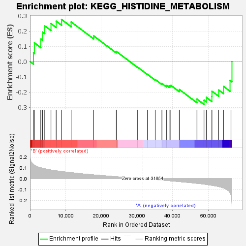

| | | Dataset | my.my.cls#B_versus_A.my.cls#B_versus_A_repos |
| Phenotype | my.cls#B_versus_A_repos |
| Upregulated in class | A |
| GeneSet | KEGG_HISTIDINE_METABOLISM |
| Enrichment Score (ES) | -0.2812122 |
| Normalized Enrichment Score (NES) | -0.8973214 |
| Nominal p-value | 0.5928854 |
| FDR q-value | 0.6281508 |
| FWER p-Value | 1.0 |
Table: GSEA Results Summary

Fig 1: Enrichment plot: KEGG_HISTIDINE_METABOLISM
Profile of the Running ES Score & Positions of GeneSet Members on the Rank Ordered List
| SYMBOL | TITLE | RANK IN GENE LIST | RANK METRIC SCORE | RUNNING ES | CORE ENRICHMENT | | 1 | METTL6 | na | 959 | 0.131 | 0.0570 | Yes |
| 2 | FTCD | na | 1228 | 0.124 | 0.1227 | Yes |
| 3 | ALDH1A3 | na | 3021 | 0.100 | 0.1478 | Yes |
| 4 | LCMT2 | na | 3532 | 0.096 | 0.1931 | Yes |
| 5 | AMDHD1 | na | 4133 | 0.091 | 0.2342 | Yes |
| 6 | MAOB | na | 5877 | 0.080 | 0.2489 | Yes |
| 7 | ALDH1B1 | na | 7337 | 0.073 | 0.2646 | Yes |
| 8 | LCMT1 | na | 8851 | 0.067 | 0.2754 | Yes |
| 9 | HNMT | na | 11536 | 0.056 | 0.2597 | No |
| 10 | HEMK1 | na | 17840 | 0.035 | 0.1684 | No |
| 11 | ALDH7A1 | na | 24194 | 0.018 | 0.0666 | No |
| 12 | ALDH3A2 | na | 30096 | 0.004 | -0.0356 | No |
| 13 | ALDH3B2 | na | 32923 | -0.003 | -0.0838 | No |
| 14 | AOC1 | na | 35100 | -0.009 | -0.1174 | No |
| 15 | METTL2B | na | 36985 | -0.013 | -0.1431 | No |
| 16 | TRMT11 | na | 38310 | -0.017 | -0.1570 | No |
| 17 | ASPA | na | 38999 | -0.019 | -0.1586 | No |
| 18 | CNDP1 | na | 39469 | -0.020 | -0.1556 | No |
| 19 | UROC1 | na | 41854 | -0.027 | -0.1827 | No |
| 20 | HAL | na | 46806 | -0.042 | -0.2463 | No |
| 21 | ALDH3B1 | na | 48784 | -0.050 | -0.2529 | No |
| 22 | HDC | na | 49429 | -0.053 | -0.2345 | No |
| 23 | DDC | na | 50983 | -0.060 | -0.2278 | No |
| 24 | ACY3 | na | 51004 | -0.060 | -0.1940 | No |
| 25 | ALDH3A1 | na | 52902 | -0.072 | -0.1866 | No |
| 26 | MAOA | na | 54256 | -0.085 | -0.1623 | No |
| 27 | ALDH9A1 | na | 56081 | -0.126 | -0.1232 | No |
| 28 | ALDH2 | na | 56619 | -0.235 | 0.0000 | No |
Table: GSEA details [plain text format]
Fig 2: KEGG_HISTIDINE_METABOLISM
Blue-Pink O' Gram in the Space of the Analyzed GeneSet
Fig 3: KEGG_HISTIDINE_METABOLISM: Random ES distribution
Gene set null distribution of ES for KEGG_HISTIDINE_METABOLISM